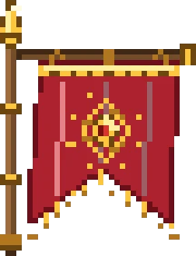
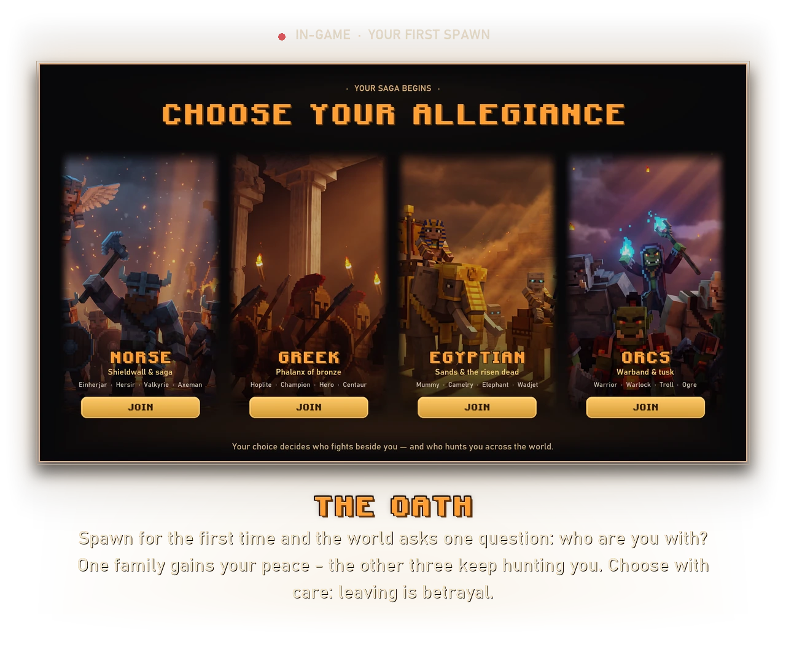
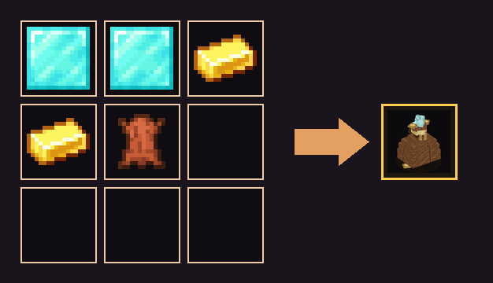
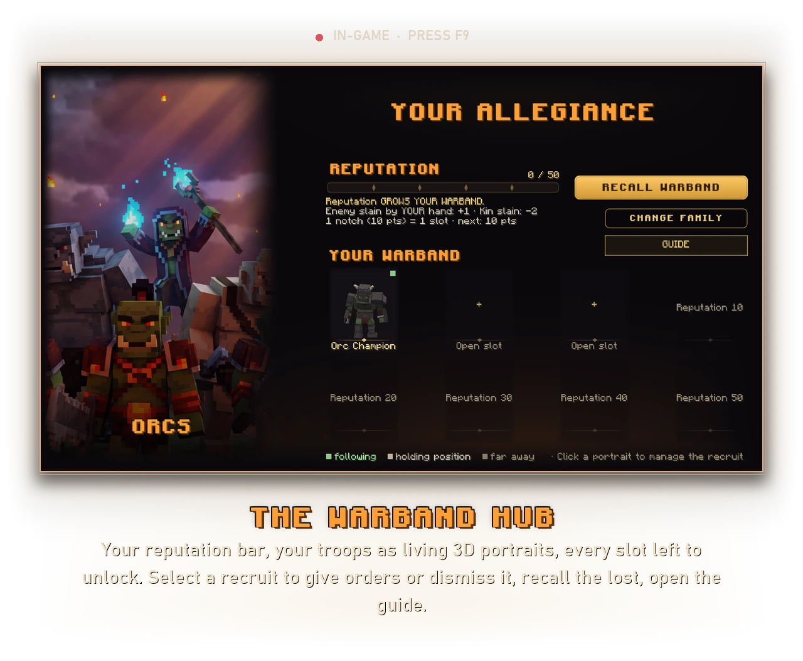
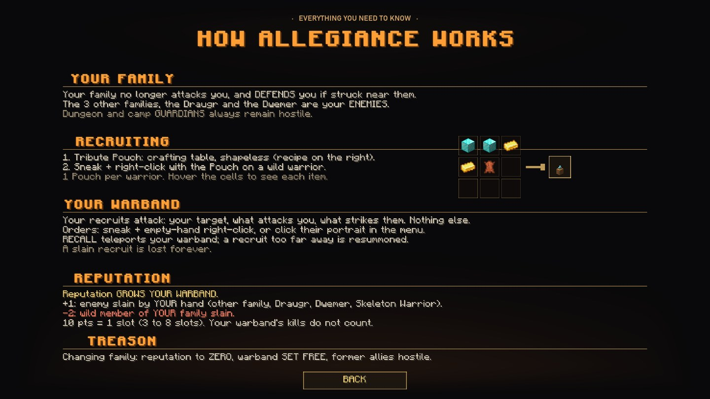

Pledge to a family, raise a warband, and let the world take sides.


On your first spawn the Allegiance screen opens. One family gains your peace: its wild warriors stop attacking you, and defend you if you are struck near them. The three other families - and the Draugr and Dwemer - remain your enemies. Dungeon and camp guardians always stay hostile: a shrine keeps its teeth.
You can change family later (press F9 → Change Family) - but that is treason, and treason has a price. See below.

Reputation grows your warband, and only your own kills count - your troops' kills do not.
+1 for every enemy of your family slain by your hand - rival warbands, Draugr, Dwemer, Skeleton Warriors.
-2 for killing a wild member of your own family. The clan remembers its dead.
Every 10 points unlocks one more warband slot - from 3 troops up to 8 at reputation 50. Open the hub with F9 to see your bar, your troops as living portraits, and every slot left to earn.
A name feared across the wilds is more than bragging rights - your total reputation grants lasting boons that follow you everywhere, arena or not:
Your armour toughness climbs - you shrug off blows that once staggered you.
+2 hearts of maximum health. The clan's champion does not fall easily.
Slow regeneration - your wounds knit closed between fights, on their own.
Lasting Strength - at the top of the ladder, your every strike lands like a warlord's.

Press F9 anywhere. The Warband Hub shows your reputation, your troops and their state - following, holding position, or far away. Recall Warband teleports your troops to your side; a recruit lost too far away is resummoned. A slain recruit, though, is lost forever. The Guide button opens the full rulebook in game.

Talk to the Master to sign a contract. The gate seals, the crowd roars, war drums start - and there is no walking out. You survive the waves, or the sand keeps you. Only Antique Beasts and orcs answer the horn, and they come harder each round: 3 to 9 of them per wave, drawn from ever-deadlier pools as the tiers climb.
This is the gamble that makes the arena sing. Every wave you clear adds treasure to a pot - and the pot keeps growing as long as you keep fighting. Between waves the gate opens for a 15-second intermission: the crowd catches its breath, and you face a choice.
Every wave you clear for the first time also raises your reputation by one - and your best run is engraved on the Master for the whole server to read. Beat the record and it becomes yours.